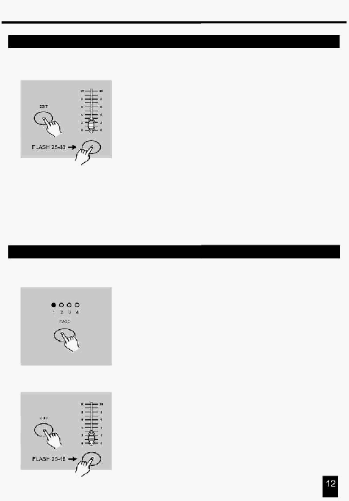

2. Опис інструкцій
2.2.1 Редагування Програми
5. Утримуючи натиснутою кнопку Edit, натисніть кнопку Flash до
якої закріплена Програма, що Ви бажаєте редагувати.
6. Відпустіть кнопку Edit, індикатор відповідної сцени повинен
засвітитися, указуючи, що Ви перебуваєте в
режимі Редагування.
2.2.2 Стирання Програми
1.
Виконайте процедуру Дозвіл Запису.
2.
Використовуючи кнопку Page, виберіть сторінку, на якій розміщена
Програма, що Ви бажаєте стерти.
3.
Утримуючи кнопку Edit, натисніть кнопку Flash (25-48) двічі.
4. Відпустіть дві кнопки, всі індикатори мигнуть, указуючи, що
Програма стерта з пам'яті.
Натисніть цю кнопку двічі